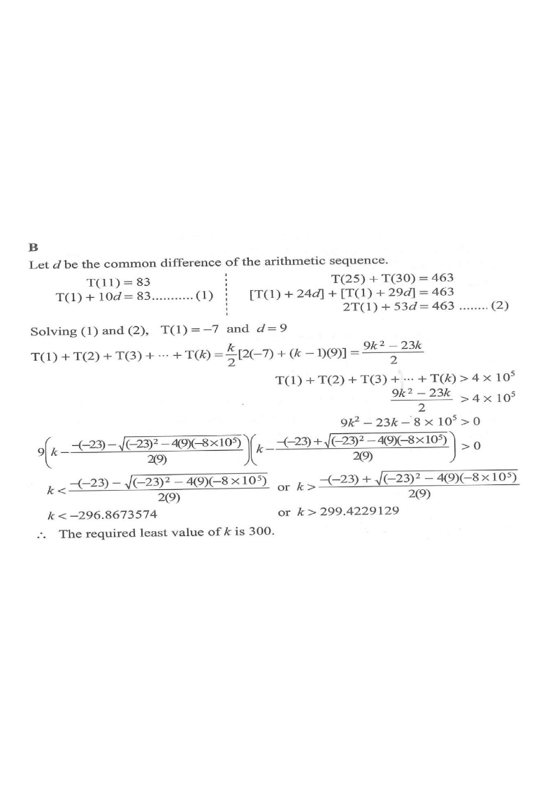

terms $T(n)$partial sum $S(k)$$S(k)>4\times10^{5}$key terms
HKDSE 2023 · Paper 2 · Q36
Let \(T(n)\) be the \(n\)th term of an arithmetic sequence. If
\(T(11)=83\) and \(T(25)+T(30)=463\), find the least value of \(k\) such that
\[T(1)+T(2)+T(3)+\cdots+T(k) > 4\times 10^{5}.\]
A. 299
B. 300
C. 944
D. 945

Figure (original exam diagram)
STEP 1
nth Term of an Arithmetic Sequence\(T(n)=a+(n-1)d\)Writing each given term in terms of \(a\) and \(d\) turns the data into two linear equations.
Set up the two equations. Let \(d\) be the common difference and write each term as \(T(n)=a+(n-1)d\) with \(a=T(1)\).
Hint: back-substitute to find the first term \(a=-7\).
STEP 3
Sum of an Arithmetic Sequence\(S(n)=\dfrac{n}{2}\left[\,2a+(n-1)d\,\right]\)The sum of the first \(k\) terms is a quadratic in \(k\), which the inequality is built on.
Write the sum formula. Using \(S(k)=\dfrac{k}{2}\big[\,2a+(k-1)d\,\big]\):
Quadratic Formula\(k=\dfrac{-b\pm\sqrt{b^{2}-4ac}}{2a}\)The two roots of \(9k^{2}-23k-8\times 10^{5}=0\) locate where the sum first exceeds \(4\times 10^{5}\).
Solve the quadratic inequality. The roots of \(9k^2-23k-8\times10^5=0\) are
Hint: verify the neighbouring integers to justify "least".
Answer: B ( \(k=300\) )
PRACTICESimilar question — try it yourself
Question. Let \(T(n)\) be the \(n\)th term of an arithmetic sequence. If \(T(8)=52\) and \(T(20)+T(24)=272\), find the least value of \(k\) such that \(T(1)+T(2)+\cdots+T(k)>50000\).
Show the worked solution
Step 1. With \(T(n)=a+(n-1)d\): \(a+7d=52\ \cdots(1)\) and \((a+19d)+(a+23d)=272\), i.e. \(2a+42d=272\ \cdots(2)\).
Step 2. From \((1)\), \(a=52-7d\). Substituting into \((2)\): \(104-14d+42d=272\), so \(28d=168\), \(d=6\) and \(a=52-42=10\).